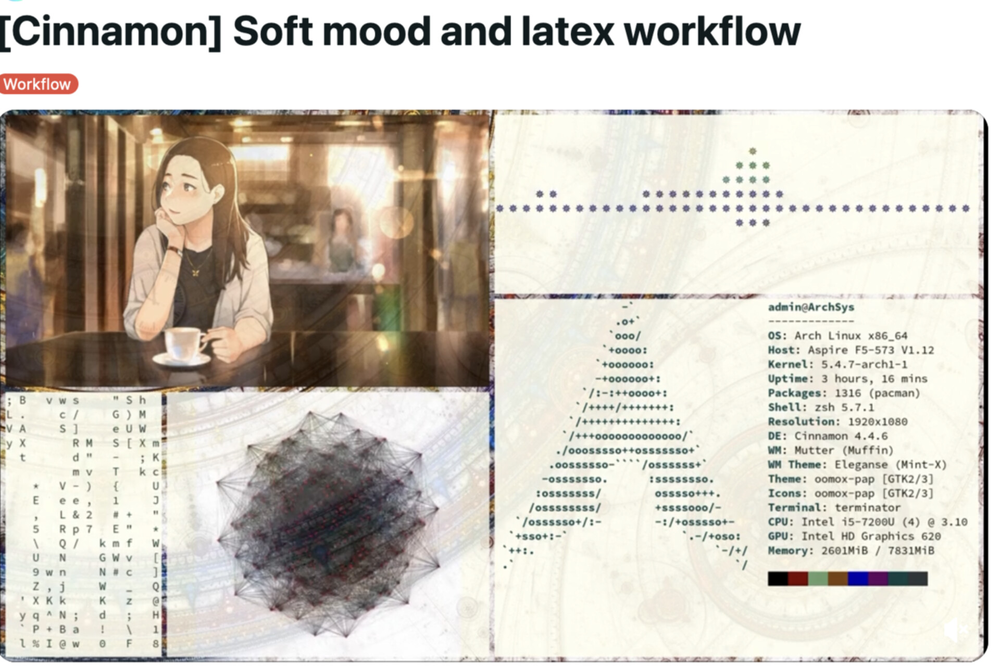

Launching AWS EC2 Instances with Bash Scripts and the AWS CLI
A scripted approach to repeatable server provisioning on Amazon Web Services
I did not appreciate how tedious it was to click through the EC2 console until I automated the whole process with four short bash scripts and the AWS CLI.

Automating cloud infrastructure removes repetitive manual steps and lets you focus on the work that matters.
1 Introduction
I did not really appreciate how much time I was spending clicking through the AWS EC2 console until I tried to spin up the same configuration for the third time in a month. Each launch required navigating a dozen screens, selecting the same AMI, the same instance type, the same security group settings, and the same key pair, all by hand.
The turning point came when I discovered that the AWS Command Line Interface (CLI) exposes every console action as a terminal command. Four short bash scripts later, I could reproduce an identical server environment in under two minutes. This post documents those scripts and the environment variables that drive them.
In a separate post (here) I address the same task using the interactive EC2 dashboard. That walkthrough is instructive for understanding the components, but it becomes tedious after the first few repetitions. The scripts presented here replace that manual workflow entirely.
1.1 Motivations
- I needed a reliable way to launch identical EC2 instances for hosting Shiny applications without re-entering the same parameters each time.
- Clicking through the EC2 console is error-prone: a wrong subnet or missing port rule can waste an hour of debugging.
- Scripted provisioning makes it possible to version control the entire server setup alongside application code.
- I wanted a teardown procedure that is as quick and systematic as the setup, reducing the risk of orphaned resources accumulating charges.
- Learning the AWS CLI seemed like a transferable skill that would pay dividends beyond this single use case.
1.2 Objectives
- Install and configure the AWS CLI on a macOS workstation, including IAM credential setup.
- Define eight environment variables that parameterise all subsequent scripts.
- Write four bash scripts that create a security group, generate a key pair, launch an EC2 instance, and bootstrap server software.
- Walk through a complete sample work session from scratch and document the teardown (undo) procedure.
I am documenting my learning process here. If you spot errors or have better approaches, please let me know.
2 What is the AWS CLI?
The AWS Command Line Interface is a unified tool that provides a consistent interface for interacting with all parts of Amazon Web Services from a terminal. Think of it as the scriptable equivalent of the EC2 web console: every button click in the browser corresponds to an aws subcommand.
The key benefit is repeatability. A bash script that calls aws ec2 run-instances will produce the same result every time, whereas a manual console session depends on the operator selecting the correct options from dozens of dropdown menus.
3 Prerequisites
This post assumes:
- Operating system: macOS 13+ or a Linux distribution with bash 5+.
- Already installed: Homebrew (macOS) or apt (Debian / Ubuntu), plus
jqfor JSON parsing. - Background knowledge: comfort editing dotfiles and running shell commands; familiarity with the AWS console at a basic level.
- AWS account: an active account with permission to create IAM users.
- Time required: about 30 minutes for install, configuration, and a first launch.
4 Installation
On macOS, Homebrew provides the simplest installation path. The aws configure command then prompts for your IAM credentials, default region, and output format.
brew install awscli jq
aws configureInstructions to install the Homebrew software management system on macOS can be found at brew.sh.
The aws configure command will ask for four values:
- AWS Access Key ID and AWS Secret Access Key: obtained from your IAM credentials CSV (see Appendix A: IAM Credential Setup below).
- Default region: for example,
us-west-1. - Default output format:
jsonis recommended.
Additional instructions from Amazon for installing the AWS CLI can be found in the official documentation.
5 Configuration
Nine parameters (including a project name) are required for automated instance generation via the AWS API. The first eight are likely to remain static across launches. Store them as environment variables in your shell configuration file so that every script can reference them without hardcoded values.
Add the following to your .zshrc (or equivalent):
1-2. VPC and Subnet. The default VPC is assigned by AWS and can be found on the EC2 dashboard. Each VPC has at least two subnets; select one in which to launch the instance.
export vpc_id="vpc-14814b73"
export subnet_id="subnet-f02c90ab"3-5. AMI, instance type, and storage. These define the operating system and the capabilities of the server.
export ami_id="ami-014d05e6b24240371"
export instance_type="t2.micro"
export storage_size="30"6-7. Key pair name and security group. These identify the SSH key pair and the firewall.
export key_name="power1_app"
export security_grp="sg-0fef542d93849669c"8. Static IP. The Elastic IP that identifies the server on the public internet.
export static_ip="13.57.139.31"A ninth parameter, proj_name, can also be hardcoded or supplied at the time each script is called.
6 Verification
Run the following to verify the install and configuration loaded correctly:
# 1. Version check
aws --version
# 2. Configuration introspection
aws configure list
echo "vpc_id=$vpc_id" # should print your VPC ID
# 3. Functional smoke test (lists instances in region)
aws ec2 describe-instances \
--query 'Reservations[].Instances[].InstanceId'If step 3 returns a JSON array (empty or populated), the credentials and region are configured correctly.
7 The Four Provisioning Scripts
The provisioning workflow consists of four scripts executed in sequence:
- Create a security group: define firewall rules (which ports to open).
- Create a key pair: generate an SSH key for encrypted communication.
- Launch the instance: provision the server with all parameters.
- Bootstrap software: install Docker and supporting tools on first boot.
7.1 Script 1: Create Security Group
This script creates a security group (firewall) and opens specified ports. The -n flag sets the group name and the -p flag adds a port. The default behaviour opens ports 22 (SSH) and 443 (HTTPS) only.
Example usage:
aws_create_security_group.sh \
-n power1_app -p 22 -p 80 -p 443#!/usr/bin/env bash
Help()
{
echo "The script generates a new security group."
echo "The group name is given with the -n flag."
echo "Ports are specified with the -p flag."
echo "Anticipated incoming ports: 22 ssh, 80 http,"
echo " 3838 shiny, 443 https."
echo "Script will fail if group name already exists."
echo "Reads vpc_id from environment variables."
echo "Example:"
echo " aws_create_security_group.sh \\"
echo " -n power1_app -p 22 -p 80 -p 443"
}
sg_grp_name=$(basename "$PWD")
while getopts ":hp:n:" opt; do
case $opt in
p ) ports+=("$OPTARG") ;;
n ) sg_grp_name=$OPTARG ;;
h ) Help
exit ;;
* ) echo \
'error in command line parsing' >&2
exit 1
esac
done
echo "sg group name = $sg_grp_name"
aws ec2 create-security-group \
--group-name "$sg_grp_name" \
--description "security group" \
--tag-specifications \
"ResourceType=security-group,\
Tags=[{Key=Name,Value=$sg_grp_name}]" \
--vpc-id "$vpc_id" > temp.txt
wait
security_grp=$(jq -r .GroupId temp.txt)
wait
echo "security group ID = $security_grp"
for i in "${ports[@]}"
do
aws ec2 authorize-security-group-ingress \
--group-id "$security_grp" \
--protocol tcp \
--port "${i}" \
--cidr "0.0.0.0/0" > /dev/null
done7.2 Script 2: Create Key Pair
This script generates an SSH key pair and stores the private key in ~/.ssh/. The -k flag sets the key pair name; if omitted, the current directory name is used.
Example usage:
aws_create_keypair.sh -k power1_app#!/usr/bin/env bash
Help()
{
echo "The script generates a new key pair."
echo "The key pair name is given with the -k flag."
echo "Script will fail if name already exists."
echo "Example:"
echo " aws_create_keypair.sh -k power1_app"
}
while getopts 'hk:' flag; do
case "${flag}" in
h) Help
exit;;
k) key_pair_name=${OPTARG};;
esac
done
base=$(basename "$PWD")
if [ -z "$key_pair_name" ]
then
key_pair_name=$base
fi
echo "key_pair_name is $key_pair_name"
cd ~/.ssh
rm -f "$HOME/.ssh/$key_pair_name.pem"
aws ec2 create-key-pair \
--key-name "$key_pair_name" \
--query 'KeyMaterial' \
--output text > "$HOME/.ssh/$key_pair_name.pem"
wait
chmod 400 "$HOME/.ssh/$key_pair_name.pem"
7.3 Script 3: Launch the EC2 Instance
This is the core script. It reads all eight environment variables, launches the instance, and associates the Elastic IP. The -p flag sets the project name used for tagging.
Example usage:
aws_create_instance.sh -p power1_app#!/usr/bin/env bash
Help()
{
echo "Notes on current parameters:"
echo "Security group should already exist."
echo " If not, run aws_create_security_group.sh."
echo "Key pair should already exist."
echo " If not, run aws_create_keypair.sh."
echo "AMI ID is for Ubuntu Linux 22.04 LTS."
echo "Check static IP: nslookup <IP>"
echo ""
echo "Usage:"
echo " aws_create_instance.sh -p power1_app"
echo ""
echo "Review parameters:"
echo "---"
echo "proj_name: $proj_name"
echo "keypair_name: $keypair_name"
echo "vpc_id: $vpc_id"
echo "subnet_id: $subnet_id"
echo "ami_id: $ami_id"
echo "security_grp: $security_grp"
echo "static_ip: $static_ip"
echo "instance_type: $instance_type"
echo "storage_size: $storage_size"
}
while getopts 'hp:' flag; do
case "${flag}" in
h) Help
exit;;
p) proj_name=${OPTARG};;
esac
done
base=$(basename "$PWD")
if [ -z "$proj_name" ]
then
proj_name=$base
fi
aws ec2 run-instances \
--image-id "$ami_id" \
--count 1 \
--instance-type "$instance_type" \
--key-name "$keypair_name" \
--security-group-ids "$security_grp" \
--subnet-id "$subnet_id" \
--block-device-mappings \
"[{\"DeviceName\":\"/dev/sda1\",\
\"Ebs\":{\"VolumeSize\":$storage_size}}]" \
--tag-specifications \
"ResourceType=instance,\
Tags=[{Key=Name,Value=$proj_name}]" \
--user-data \
file://~/Dropbox/prj/c060/aws_startup_code.sh
iid0=$(aws ec2 describe-instances \
--filters "Name=tag:Name,Values=$proj_name" | \
jq -r \
'.Reservations[].Instances[].InstanceId')
echo "$iid0"
read -p "enter instance id:" iid
echo "instance id: $iid"
aws ec2 associate-address \
--public-ip "$static_ip" \
--instance-id "$iid"7.4 Script 4: Startup Bootstrap
This user-data script runs automatically on first boot. It installs Docker and Docker Compose on the new Ubuntu instance, then adds the default ubuntu user to the docker group.
#!/bin/bash
apt update
apt-get install curl -y
apt-get install gnupg -y
apt-get install ca-certificates -y
apt-get install lsb-release -y
sudo install -m 0755 -d /etc/apt/keyrings
curl -fsSL \
https://download.docker.com/linux/ubuntu/gpg | \
sudo gpg --dearmor \
-o /etc/apt/keyrings/docker.gpg
sudo chmod a+r /etc/apt/keyrings/docker.gpg
echo \
"deb [arch="$(dpkg --print-architecture)" \
signed-by=/etc/apt/keyrings/docker.gpg] \
https://download.docker.com/linux/ubuntu \
"$(. /etc/os-release \
&& echo "$VERSION_CODENAME")" stable" | \
sudo tee /etc/apt/sources.list.d/docker.list \
> /dev/null
apt-get update
apt-get install docker-ce docker-ce-cli \
containerd.io docker-compose-plugin -y
su ubuntu -
usermod -aG docker ubuntu8 Daily Workflow
Once the four scripts are in place, the daily-use commands become:
| Command | Action |
|---|---|
aws_create_security_group.sh -n NAME -p P |
Create firewall, open port P |
aws_create_keypair.sh -k NAME |
Generate .pem key under ~/.ssh/ |
aws_create_instance.sh -p NAME |
Launch tagged EC2 instance |
ssh rgtlab.org |
Connect to the running instance |
aws ec2 describe-instances |
List all instances in current region |
aws ec2 terminate-instances --instance-ids ID |
Terminate by instance ID |
After two or three provisioning cycles these become muscle memory and the productivity gain compounds.
8.1 Connecting to the New Server
For convenience, construct a config file in ~/.ssh/ so that you can connect with a simple hostname rather than remembering the IP address and key path:
Host rgtlab.org
HostName 13.57.139.31
User ubuntu
Port 22
IdentityFile ~/.ssh/power1_app.pemThen connect with:
ssh rgtlab.orgSet the private key permissions to 600 for additional security: chmod 600 ~/.ssh/power1_app.pem
9 Things to Watch Out For
Security group names must be unique within a VPC. If a group with the same name already exists, the create script will fail. Check the EC2 console or use
aws ec2 describe-security-groupsbefore running the script.Key pair names must also be unique. A duplicate name causes a CLI error. Delete the old pair first if you need to regenerate.
The Elastic IP must be allocated before association. If you have not yet allocated a static IP through the console, the associate command in Script 3 will fail silently.
User-data scripts run as root on first boot only. If the bootstrap script has an error, you must terminate the instance and launch a new one; there is no way to re-run user-data on an existing instance.
Environment variables are session-scoped. If you open a new terminal without sourcing
.zshrc, the scripts will fail because the variables are not set. Verify withecho $vpc_idbefore running any script.AWS CLI commands are region-specific. Ensure your
aws configureregion matches the region where you allocated your VPC and Elastic IP, or commands will appear to succeed but operate on the wrong region.
10 Uninstall / Rollback
To remove the AWS CLI from your workstation:
# 1. Remove the configuration
rm -i ~/.aws/credentials ~/.aws/config
# 2. Uninstall the CLI
brew uninstall awscli # macOS
sudo apt remove awscli # Ubuntu / DebianFor full AWS resource teardown (terminating instances, deleting security groups, releasing Elastic IPs), see Appendix C: Teardown.
11 What Did We Learn?
11.1 Lessons Learnt
Conceptual Understanding:
- The EC2 console and the AWS CLI are two interfaces to the same API; anything clickable in the browser has a corresponding
aws ec2subcommand. - A security group is a stateful firewall that operates at the instance level, not the subnet level; each rule opens a single port to a specified CIDR range.
- Elastic IPs are free while associated with a running instance but incur charges when allocated but unused.
- User-data scripts provide a one-shot bootstrap mechanism; for ongoing configuration management, tools such as Ansible or cloud-init are more appropriate.
Technical Skills:
- Writing bash scripts with
getoptsfor flag parsing produces reusable, self-documenting CLI tools. - The
jqutility is essential for extracting fields from the JSON responses returned by AWS CLI commands. - Storing infrastructure parameters as environment variables decouples configuration from code, following the twelve-factor app methodology.
- The
--user-data file://directive inaws ec2 run-instancesenables automatic software installation on instance launch.
Gotchas and Pitfalls:
- Forgetting to
chmod 400the PEM file will cause SSH to reject the connection with a permissions error. - The
--cidr "0.0.0.0/0"rule opens a port to the entire internet; restrict this to your own IP in production environments. - If you delete a security group while an instance references it, the deletion will fail; terminate the instance first.
- AWS CLI commands are region-specific; ensure your
aws configureregion matches the region where you allocated your VPC and Elastic IP.
11.2 Limitations
- These scripts assume a single-instance deployment and do not address auto-scaling groups, load balancers, or multi-AZ redundancy.
- The security group rules open ports to all IPv4 addresses (
0.0.0.0/0), which is acceptable for development but inappropriate for production. - The bootstrap script installs Docker but does not configure TLS certificates, reverse proxies, or application-level security.
- IAM credentials stored in
~/.aws/credentialsare long-lived; rotating to short-lived credentials via IAM roles would be more secure. - The scripts do not include any error recovery or rollback logic; a failure mid-sequence can leave orphaned resources.
- All commands target a single AWS region; multi-region deployments would require additional parameterisation.
11.3 Opportunities for Improvement
- Replace long-lived IAM credentials with IAM roles attached directly to the EC2 instance profile.
- Add
set -euo pipefailto each script for stricter error handling and automatic failure on undefined variables. - Migrate the bootstrap script to a cloud-init configuration file for better logging and idempotency.
- Restrict security group ingress rules to the operator’s current public IP rather than
0.0.0.0/0. - Wrap all four scripts in a single orchestration script with a
--teardownflag to reverse the entire setup. - Explore AWS CloudFormation or Terraform for declarative infrastructure definitions that can be version controlled and reviewed.
12 Wrapping Up
Automating EC2 provisioning with the AWS CLI reduced what was a fifteen-minute, error-prone console session to a two-minute, reproducible bash workflow. The four scripts presented here (security group creation, key pair generation, instance launch, and software bootstrap) cover the essential steps for getting a Docker-ready Ubuntu server online.
The most valuable lesson was that the AWS console and the CLI are two windows into the same API. Once that relationship became clear, every new console action suggested a corresponding scriptable command, and the scope for automation expanded considerably.
Main takeaways:
- Four bash scripts replace the entire EC2 console provisioning workflow.
- Eight environment variables parameterise the scripts, making them reusable across projects.
- The teardown procedure (Appendix C below) is equally important; orphaned resources accumulate charges.
- The AWS CLI is a transferable skill applicable to S3, RDS, Lambda, and every other AWS service.
13 See Also
Related posts:
- Setting Up an AWS EC2 Server via the Console: the manual equivalent of this workflow.
Key resources:
14 Reproducibility
Tested configuration:
| Component | Version |
|---|---|
| Operating system | macOS 13.x |
| AWS CLI | 2.x |
| Shell | zsh 5.9 |
| jq | 1.6+ |
| Homebrew | 4.x |
| Last verified | 2023-04-12 |
The scripts in this post do not require R or Quarto to execute. They require:
- macOS or Linux with bash
- Homebrew (macOS) for AWS CLI installation
- An active AWS account with IAM credentials
jqinstalled (brew install jq)
To reproduce the full provisioning workflow:
aws configure
aws_create_security_group.sh \
-n power1_app -p 22 -p 80 -p 443
aws_create_keypair.sh -k power1_app
aws_create_instance.sh -p power1_app15 Appendix A: IAM Credential Setup
This appendix explains how to create IAM credentials for use with the AWS CLI.
- Log into the AWS console.
- Search for the IAM service and navigate to the IAM dashboard.
- Select User groups and create a group based on the Power User profile. Name it
adminand include your IAM user in the group. - Select Users in the left panel, then click Create User.
- Enter a username (e.g.
zenn) and click Next, then Create User. - Click on the new username. Select the Security Credentials tab.
- Under the Access Keys panel, click Create access key.
- Select Command Line Interface (CLI) and check the acknowledgement box at the bottom.
- Click Create access key and then Download .csv file.
- Save the CSV to your local
~/.aws/directory.
Now configure the CLI:
aws configurePaste the Access Key ID and Secret Access Key from the downloaded CSV. When prompted, enter your region (e.g. us-west-1) and output format (json).
AWS Identity and Access Management (IAM) is a web service that helps you securely control access to AWS resources. Treat your credentials like passwords: never commit them to version control.
16 Appendix B: Sample Work Session
This appendix walks through a complete provisioning session starting from scratch, assuming only that aws configure has been run and that VPC and subnet IDs are stored as environment variables.
Assumptions:
- AWS CLI is configured.
- No security group has been defined.
- No key pair has been generated.
vpc_idandsubnet_idare known.- Project name is
power1_app.
The session will spin up an Ubuntu server (AMI) with type t2.micro (1 vCPU, 1 GB memory) and a 30 GB hard drive.
In the AWS Console navigation pane, select Your VPCs to find the vpc_id. The associated subnets are listed on the Subnets page.
Step 1. Generate a security group and capture the group ID:
aws_create_security_group.sh \
-n power1_app -p 22 -p 80 -p 443Step 2. Create the key pair:
aws_create_keypair.sh -k power1_appStep 3. Allocate a new Elastic IP and update shell configuration. If the new IP is 204.236.167.50:
sed -i '.bak' '/static/d' \
~/.config/zsh/.zsh_export
sed -i '.bak' '/security/d' \
~/.config/zsh/.zsh_export
echo "export static_ip='204.236.167.50'" \
>> ~/.config/zsh/.zsh_export
echo "export security_grp='sg-0fda72c2879d6b2ad'" \
>> ~/.config/zsh/.zsh_exportStep 4. Launch the instance:
aws_create_instance.sh -p power1_appStep 5. Update SSH config with the new IP:
cd ~/.ssh
sed -i '.bak' '/HostName/d' config
echo " HostName 204.236.167.50" >> config17 Appendix C: Teardown (Undo)
To remove all AWS resources associated with a project, follow these steps in order:
- Terminate the instance. In the EC2 console, select the instance and choose Instance state > Terminate.
- Delete the security group. Under Network & Security > Security Groups, select the group and choose Actions > Delete.
- Release the Elastic IP. Under Network & Security > Elastic IPs, select the address and choose Actions > Release.
- Delete the SSH key pair. Under Network & Security > Key Pairs, select the pair and choose Actions > Delete.
- Clean up GitLab (if applicable). Log into
gitlab.comand delete the project under Settings > General > Advanced.
Orphaned Elastic IPs and unused EBS volumes continue to accrue charges. Always run the full teardown when a project is complete.
18 Let’s Connect
- GitHub: rgt47
- Twitter/X: @rgt47
- LinkedIn: Ronald Glenn Thomas
- Email: rgtlab.org/contact
I would enjoy hearing from you if:
- You spot an error or a better approach to any of the code in this post.
- You have suggestions for topics you would like to see covered.
- You want to discuss R programming, data science, or reproducible research.
- You have questions about anything in this tutorial.
- You just want to say hello and connect.